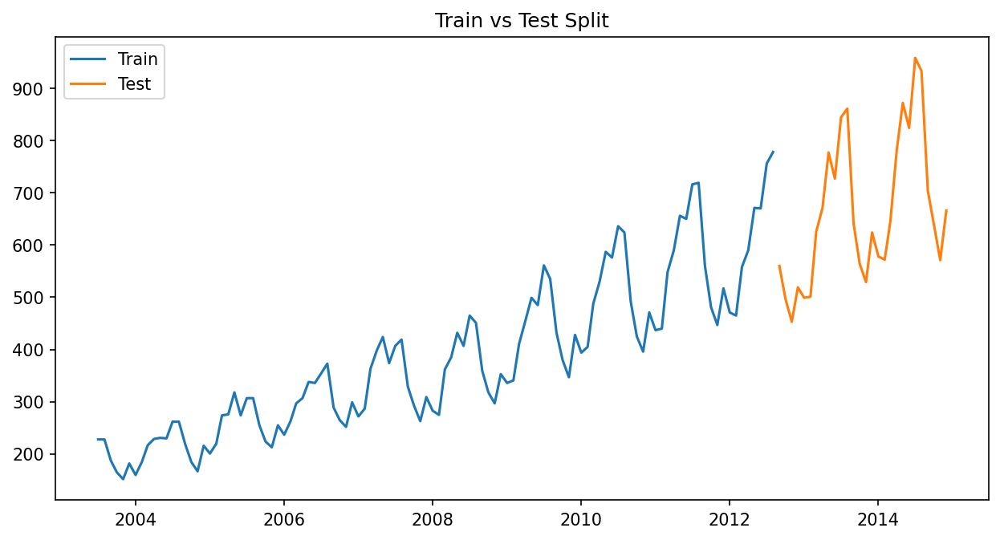
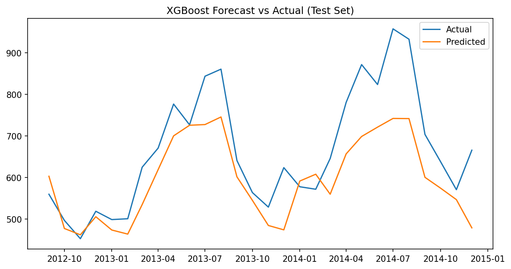
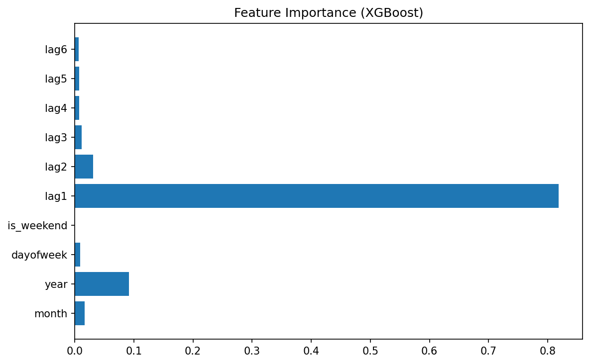
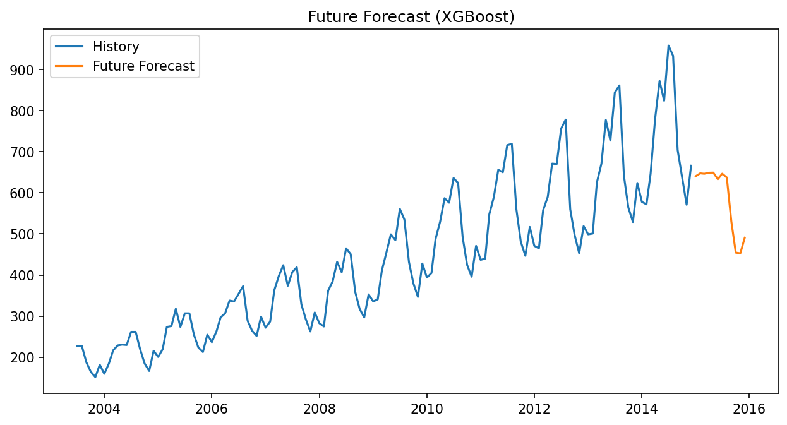

In this project, I use time series data from a Kaggle dataset: [INSERT DATASET NAME HERE]. The target variable I want to forecast is [INSERT TARGET, e.g. daily sales, energy demand, etc.].
Forecasting this series is important because [EXPLAIN WHY: e.g. it helps plan inventory, staffing, budgeting, etc.].
I sorted the data by date and used the first [PERCENT OR DATE RANGE] as training data and the last [PERCENT OR DATE RANGE] as test data. This simulates predicting future values using only past information.
Trade-off: more training data can improve learning but leaves less data to evaluate performance; more test data gives a better evaluation but less training for the model.
Train/Test Plot:
From the original date column, I created several derived variables, such as:
I also included lag features, such as the value 1 step ago (lag 1), 2 steps ago (lag 2), etc. These lags let the model use recent history to predict future values.
I used an ensemble tree method (XGBoost Regressor). XGBoost builds many decision trees sequentially, where each tree tries to correct the errors of the previous trees. This allows it to capture nonlinear patterns and interactions between features.
I trained XGBoost on the training portion of the data and evaluated it on the test portion using metrics such as MAE (mean absolute error) and RMSE (root mean squared error).
XGBoost Predictions vs Actual (Test Set):
Feature Importance:
Test results (example numbers, you will replace these):
I also fit an alternative time series model: [ARIMA / Prophet / KNN / etc.]. I trained it on the same training data and evaluated it on the same test data.
Example comparison (you will fill this in with your actual results):
Brief conclusion: which model did better and why do you think that is?
After validating performance on the test data, I used the XGBoost model to predict future values for [NUMBER OF STEPS, e.g. 30 days]. I generated these forecasts step-by-step, using each new prediction as input for the next time step via the lag features.
Future Forecast:
This project shows how tree-based ensemble models and basic time series techniques (train/test split, date features, lag features) can be combined to produce useful forecasts. Time series forecasting is important because it turns historical data into information about the future, which helps organizations plan and make better decisions.